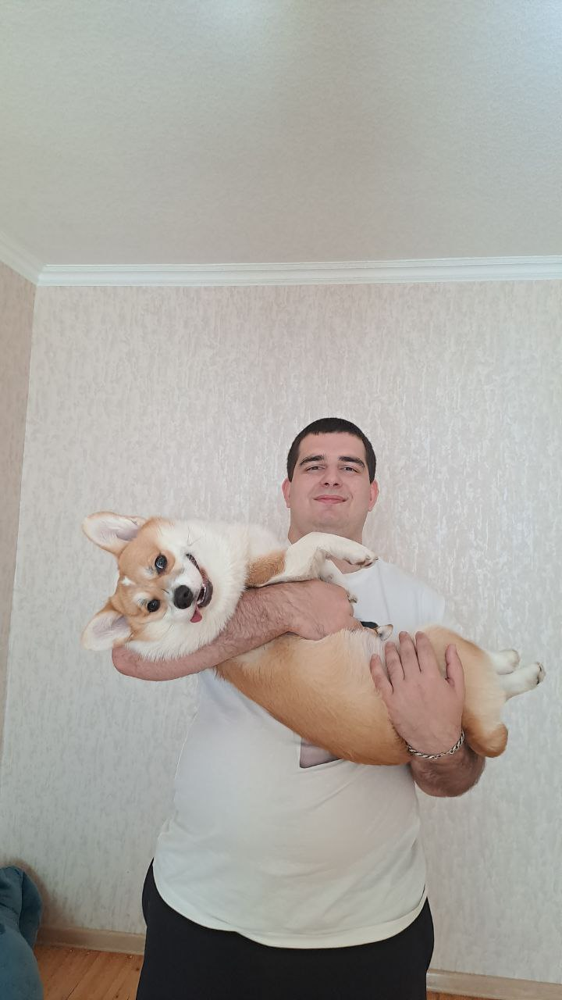

Chakalov Vladimir
Middle ASP.NET Developer
A driven and responsible developer with experience in commercial development on the .NET platform. My priorities are creating high-quality, maintainable code and continuous professional development.
Skills and Proficiency
- Languages: C#, JS, SQL
- Frameworks and Technologies: ASP.NET Core, Entity Framework Core, LINQ, Web API, WinForms, PostgreSQL, Windows Forms
- Version Control Systems: Git (GitHub, GitLab)
- Tools: Visual Studio, ReSharper, Postman, Swagger, Rider, VS Code, DBEvear
Examples
Watermelon
One hot summer day Pete and his friend Billy decided to buy a watermelon. They chose the biggest and the ripest one, in their opinion. After that the watermelon was weighed, and the scales showed w kilos. They rushed home, dying of thirst, and decided to divide the berry, however they faced a hard problem.
Pete and Billy are great fans of even numbers, that's why they want to divide the watermelon in such a way that each of the two parts weighs even number of kilos, at the same time it is not obligatory that the parts are equal. The boys are extremely tired and want to start their meal as soon as possible, that's why you should help them and find out, if they can divide the watermelon in the way they want. For sure, each of them should get a part of positive weight.
public static bool CanSplitWatermelon(int weight)
{
return weight > 2 && weight % 2 == 0;
}
Education
North Ossetian State University (NOSU)
Faculty of Mathematics and Computer Science
Major: Applied Mathematics and Computer Science
2020–2024 (Bachelor's degree)
Courses:
- Programming Basics with C#. Part 1 (Stepik, 2020)
- C# Programming Basics (Stepik, 2021)
- C# for Advanced (Stepik, 2022)
- C# LINQ Technology (Stepik, 2022)
- Interactive SQL Tutorial (Stepik, 2022)
- ASP.NET Core Course: From Beginner to Pro (Stepik, 2023)
- RS Schools Course «JavaScript/Front-end. Stage 0» (in progress)
Languages
- Russian: Native
- English: B1
Projects
About
My strengths include analytical thinking, teamwork, and a quick learner. I have experience as a mid-level developer and am always open to new technologies and best development practices.
Contact information
- Phone: +7(919)-427-36-21
- E-mail: vova.chakalov.2003@gmail.com
- Telegram: @TheRunawayDinosaurik